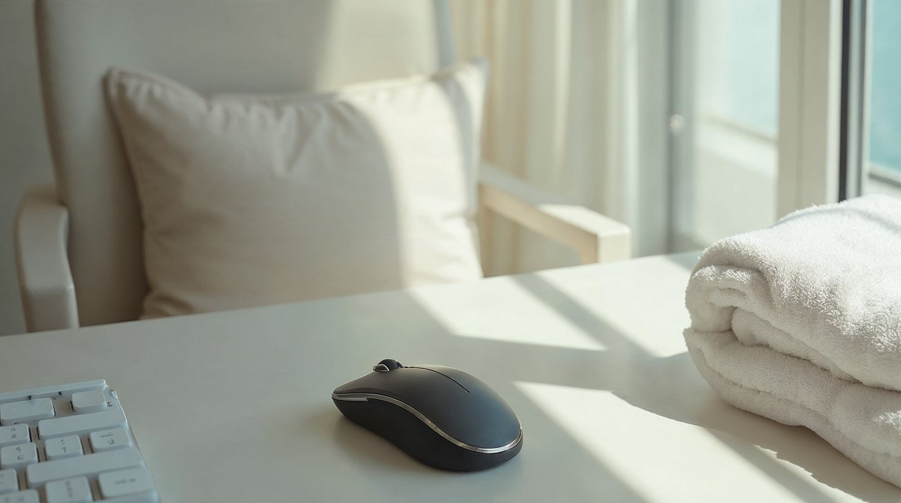
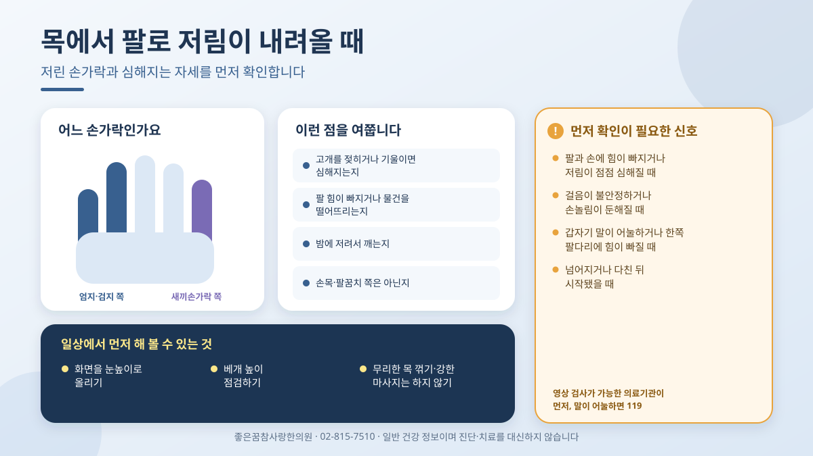

이종호 한의사 감수좋은꿈참사랑한의원 대표원장 (한의사 면허번호 19769)발행 2026-11-23 · 수정 2026-11-26
이 글의 차례
밤 열한 시, 책상 앞에서 고개를 숙인 채 몇 시간째 화면을 보고 있습니다. 문득 오른손 엄지와 검지 끝이 찌릿합니다. 손을 털어 봐도 그대로고, 어깨 뒤에서 팔꿈치를 지나 손끝까지 가는 전깃줄이 하나 생긴 것 같습니다. 다음 날 아침 머리를 감으려고 고개를 젖히자 그 줄이 다시 당겨집니다.
목에서 팔과 손가락으로 저림이 내려온다면, 목 주변에서 신경이 눌리거나 자극을 받고 있을 가능성을 먼저 생각합니다. 저는 이럴 때 어느 손가락이 저린지, 고개를 젖히거나 기울일 때 심해지는지, 팔 힘이 빠지는지를 가장 먼저 여쭙니다.
다만 손놀림이 둔해져 단추를 잠그거나 젓가락질이 어렵고, 걸음이 휘청이거나, 대소변이 평소와 다르다면 이 글보다 병원 검사가 먼저입니다. 갑자기 말이 어눌해지고 한쪽 팔다리에 힘이 빠진다면 가까운 응급실로 가셔야 합니다.
진료실에서 이런 말씀을 자주 듣습니다. 손이 저리니 혹시 큰 병은 아닌지 밤마다 검색을 하게 된다고요. 공부나 일은 계속해야 하는데 고개를 숙일 때마다 손이 찌릿하니, 불안하고 지친다는 분도 계십니다.
저림은 아픔과 달라서 남에게 설명하기도 어렵습니다. 아프다고 하면 쉬라는 말이라도 듣는데, 저리다고 하면 금방 괜찮아질 거라는 말이 돌아오지요. 그 애매한 불편을 안고 하루를 버텨 오셨을 겁니다.
왜 목이 문제인데 손이 저릴까요
목뼈 사이사이에서는 팔과 손으로 가는 신경이 하나씩 빠져나옵니다. 이 신경은 어깨를 지나 팔을 타고 내려가 손가락 끝까지 이어집니다. 그래서 목에서 신경이 눌리면 아픈 곳은 목이 아니라 팔이나 손가락이 되는 경우가 많습니다.
신경이 눌리는 이유는 여러 가지입니다. 목뼈 사이의 디스크가 밀려 나와 신경을 건드리기도 하고, 나이가 들며 뼈 가장자리가 자라 신경이 지나는 구멍이 좁아지기도 합니다. 흔히 목디스크라고 부르는 것이 앞의 경우입니다.
고개를 오래 숙이는 자세는 목 뒤쪽 근육을 늘 긴장시키고 목뼈 사이에 부담을 쌓습니다. 머리 무게는 볼링공 하나쯤인데, 고개를 앞으로 숙일수록 목이 버텨야 하는 무게가 몇 배로 늘어난다고 알려져 있습니다. 수험생이나 사무직, 휴대폰을 오래 보는 분께 저림이 잦은 이유입니다.
나이에 따라 원인의 무게도 조금 달라집니다. 비교적 젊은 나이에는 디스크가 밀려 나와 생기는 경우가 많고, 쉰을 넘기면 뼈와 인대가 두꺼워져 신경 길이 좁아지는 경우가 늘어납니다. 그래서 같은 저림이라도 나이와 시작된 모양을 함께 여쭙습니다.
무거운 것을 들다가 갑자기 시작되었는지, 몇 달에 걸쳐 서서히 심해졌는지도 중요한 단서입니다. 갑자기 시작된 저림은 그날 무엇을 했는지, 서서히 온 저림은 요즘 하루를 어떻게 보내는지부터 듣습니다.
목과 어깨 근육이 심하게 뭉쳐도 팔이 무겁고 저린 느낌이 들 수 있습니다. 이 경우는 신경이 직접 눌렸다기보다 근육의 긴장이 팔까지 당기는 느낌으로 오는 경우가 많고, 저린 손가락이 또렷하게 나뉘지 않는 편입니다.
한의학에서는 저림을 마목(麻木)이라 부르며, 기혈이 막히거나 부족해 손발까지 고루 닿지 못하는 상태로 보았습니다. 그래서 저는 목의 구조만큼이나 손발이 찬지, 잠과 소화는 어떤지를 함께 여쭙습니다.
어느 손가락이 저린지가 첫 단서입니다
목에서 나오는 신경은 높이마다 맡은 손가락이 조금씩 다릅니다. 사람마다 차이는 있지만, 저린 손가락을 보면 어느 높이를 먼저 살필지 짐작할 수 있습니다.
- 엄지와 검지 쪽: 목뼈 중간 아래쪽(흔히 6번 신경)을 먼저 생각합니다.
- 가운뎃손가락: 그보다 한 칸 아래(7번 신경) 쪽을 생각합니다.
- 넷째·새끼손가락 쪽: 목 아래 끝(8번 신경)을 생각하지만, 팔꿈치 신경도 함께 봅니다.
저린 자리를 펜으로 손바닥과 손등에 직접 그려 보시면 진료 때 큰 도움이 됩니다. 손가락 끝만인지, 팔뚝 바깥쪽까지인지, 어깨 뒤 날개뼈 안쪽이 함께 아픈지도 적어 주세요.

목인지 손목인지 팔꿈치인지 나누어 봅니다
손이 저리면 모두 목디스크라고 생각하기 쉽지만, 같은 저림이 손목이나 팔꿈치에서 오는 경우도 많습니다. 어디서 눌렸는지에 따라 살필 곳이 완전히 달라집니다.
- 목에서 오는 경우: 고개를 뒤로 젖히거나 저린 쪽으로 기울이면 팔로 찌릿하게 뻗칩니다. 손을 머리 위에 얹으면 오히려 편해지는 분도 있습니다. 목과 날개뼈 안쪽 통증이 함께 있는 경우가 많습니다.
- 손목에서 오는 경우(손목터널증후군): 엄지부터 넷째손가락 반쪽까지 저리고, 밤에 저려서 깨거나 손을 털면 나아집니다. 새끼손가락은 대개 괜찮습니다.
- 팔꿈치에서 오는 경우: 새끼손가락과 넷째손가락 쪽이 저리고, 팔꿈치를 오래 굽히고 있거나 굽힌 채 자고 나면 심해집니다.
- 어깨에서 오는 경우: 어깨 관절이나 주변 힘줄에 문제가 생겨도 팔 전체가 무겁고 힘이 안 들어가는 느낌이 들 수 있어, 양쪽 어깨의 움직임과 힘을 비교해 봅니다.
밤에 손이 저려 깨는 쪽이라면 밤에 손이 저려 깰 때 손목 초음파로 무엇을 확인하나요?를 함께 보셔도 좋습니다. 두 곳에서 동시에 눌리는 경우도 있어 하나로 단정하지 않습니다.
양쪽 손발이 함께 저리고 차다면 당뇨나 혈액순환, 비타민 부족 같은 몸 전체의 원인도 생각해야 합니다. 이 경우는 손발이 저리고 차가울 때는 어떤 점을 먼저 확인하나요?에 따로 적어 두었습니다.
먼저 이렇게 여쭙니다
처음부터 정확하게 설명하지 못하셔도 괜찮습니다. 아래 질문을 떠올려 오시면 진료실에서 이야기가 한결 쉽게 풀립니다.
- 어느 손가락이 저린가요? 엄지·검지 쪽인가요, 새끼손가락 쪽인가요?
- 고개를 뒤로 젖히거나 한쪽으로 기울이면 심해지나요?
- 팔에 힘이 빠지거나 물건을 자주 떨어뜨리나요? 단추 잠그기나 젓가락질은 어떤가요?
- 목과 어깨, 날개뼈 안쪽 통증이나 두통이 함께 있나요?
- 밤에 저려서 깨나요? 깼을 때 손을 털면 나아지나요?
- 하루에 고개를 숙이고 지내는 시간은 몇 시간쯤인가요?
일상에서 먼저 해 볼 수 있는 것
신경이 예민해진 때는 무엇을 더 하는 것보다 덜 건드리는 것이 먼저입니다. 저림을 키우는 자세를 줄이고, 목이 쉴 틈을 만들어 주는 데서 시작합니다.
- 휴대폰과 모니터를 눈높이로 올려 고개 숙이는 시간 줄이기
- 50분 앉아 있었다면 일어나 어깨를 천천히 돌리고 가슴을 펴기
- 턱을 가볍게 당겨 뒤통수를 위로 늘이는 동작을 하루 몇 번 부드럽게 해 보기
- 저림이 심해지는 동작(고개 젖히기, 한쪽으로 오래 기울이기)을 기록하고 당분간 피하기
- 무리한 목 꺾기나 아플 만큼 강한 마사지는 하지 않기
- 무거운 가방을 한쪽 어깨에만 메지 않기
어떤 동작이든 저림이 팔 아래쪽으로 더 내려가면 그 동작은 멈추세요. 반대로 저림이 목 쪽으로 올라오며 줄어든다면 몸이 편해하는 방향입니다. 시원하면 이어 가고, 불편하면 멈추는 것이 기준입니다.
목과 어깨가 굽은 자세가 오래되었다면 거북목과 라운드숄더는 집에서 어떤 스트레칭을 해 볼 수 있나요?의 동작을 천천히 따라 해 보셔도 좋습니다. 저림이 심한 날은 쉬어 가세요.
베개와 잠자리도 봅니다
자고 일어나면 저림이 심하다는 분이 많습니다. 베개가 너무 높으면 밤새 고개를 숙인 셈이 되고, 너무 낮으면 고개가 뒤로 젖혀져 신경 구멍이 좁아질 수 있습니다. 바로 누웠을 때 얼굴이 천장과 나란하고, 옆으로 누웠을 때 코끝과 가슴 가운데가 일직선이 되는 높이가 대체로 편합니다.
팔을 머리 위로 올리고 자거나, 저린 쪽 팔을 깔고 자는 습관도 한번 살펴보세요. 베개 이야기는 자고 일어나면 목이 아픈 것은 베개 때문일까요?에 더 자세히 적어 두었습니다.
예를 들면 이런 경우입니다
실제 어느 분의 사연이 아니라, 진료실에서 자주 보는 모습을 바탕으로 그려 본 장면입니다.
예를 들어 하루 종일 노트북을 내려다보며 공부하거나 일한 날 저녁에 엄지와 검지 쪽이 저리고, 주말에는 덜한 경우가 있습니다. 이럴 때는 책상 높이와 화면 높이를 먼저 바꿔 보며 1~2주 변화를 기록해 보시라고 말씀드립니다.
목과 어깨가 아프면서 팔 전체에 힘이 안 들어간다고 느끼는 경우도 있습니다. 목 신경 문제인지 어깨 관절 문제인지 나누기 위해 양쪽 어깨를 같은 동작으로 움직여 보고 힘을 비교합니다.
새끼손가락 쪽만 저리고 팔꿈치를 오래 굽히고 잔 다음 날 심해지는 경우라면 목보다 팔꿈치 쪽 신경을 먼저 살핍니다.
저림과 함께 젓가락질이나 단추 잠그기가 둔해지고 걸음이 휘청이는 경우라면, 기다리지 말고 영상 검사가 가능한 병원 진료를 먼저 받으시길 권합니다.
한의원에서 함께 살필 수 있는 경우
- 고개를 돌리거나 숙일 때 팔이 저리지만 힘 빠짐은 없는 경우
- 병원 검사에서 수술까지는 필요 없다는 말을 듣고 생활 관리와 진료를 이어 가려는 경우
- 오래 앉아 있으면 목·어깨가 굳고 팔이 무겁게 저린 경우
- 저림 때문에 잠이 얕아지고 목·어깨 긴장이 풀리지 않는 경우
좋은꿈참사랑한의원에 처음 오시면 저린 손가락과 저림이 심해지는 동작, 하루 자세와 잠 이야기를 먼저 듣고, 아래 위험 신호에 해당하는 것이 없는지부터 확인합니다. 받으신 MRI·엑스레이 결과와 드시는 약이 있다면 가져와 주세요.
그다음 양손을 올려 달라고 말씀드립니다. 저는 처음 오신 분이든 다시 오신 분이든 모든 분께 맥을 짚습니다. 맥을 짚는 동안 잠과 소화, 손발이 찬지, 요즘 마음 쓰이는 일을 여쭙습니다.
이어서 고개를 젖히고 기울이는 움직임, 양쪽 어깨의 움직임과 손의 힘, 손가락의 감각을 차례로 봅니다. 필요하다고 판단될 때는 초음파로 어깨나 팔꿈치, 손목 주변을 함께 살핍니다.
신경 증상이 뚜렷하거나 힘 빠짐이 있으면 영상 검사를 먼저 안내합니다. 그렇지 않다면 자세와 생활에서 먼저 바꿀 것과 침·약침·추나 등의 순서를 함께 정합니다. 추나는 신경 증상과 검사 결과를 확인한 뒤 신중하게 적용 여부를 정합니다.
치료 중에는 "시원하세요? 괜찮으세요?" 하고 여쭙습니다. 저림이 팔 아래로 더 내려가거나 불편하시면 바로 말씀해 주세요. 다음 진료에서는 지난번 저렸던 손가락이 어떻게 달라졌는지부터 이어서 여쭙습니다.
얼마나 지켜보고 언제 상담할까요
힘 빠짐 없이 저림만 있다면, 자세를 바꾸고 무리한 동작을 피하며 1~2주쯤 저림의 위치와 횟수를 기록해 보세요. 2주가 지나도 줄지 않거나 밤에 저려 깨는 날이 일주일에 여러 번 이어진다면 진료를 받아 원인을 나누어 보시길 권합니다.
반대로 힘이 빠지거나 저린 범위가 며칠 사이 넓어진다면 기다리지 마세요. 이때는 기록보다 검사가 먼저입니다.
이렇게 기록해 오시면 상담이 쉬워집니다
저림은 진료실에 오는 날 잠잠한 경우가 많습니다. 1~2주만 한 줄씩 적어 보세요.
- 저린 손가락과 범위(손바닥·손등에 그려 사진으로 남겨도 좋습니다), 세기(0~10)
- 저림이 심해진 자세와 시각(고개 젖히기, 휴대폰 보기, 자고 일어난 직후 등)
- 밤에 깬 횟수, 손을 털면 나아졌는지
- 물건을 떨어뜨리거나 단추·젓가락질이 둔했던 순간
- 받은 영상 검사 결과와 드시는 약 이름
빠진 날이 있어도 괜찮습니다. 기억나는 만큼만 적어 오시면 나머지는 제가 여쭙겠습니다.
이런 증상은 먼저 확인이 필요합니다
- 갑자기 말이 어눌해지거나 얼굴 한쪽이 처지고, 한쪽 팔다리에 힘이 빠지는 경우
- 소변이나 대변을 보기 어렵거나 참기 힘들어지는 등 대소변에 이상이 생긴 경우
- 단추 잠그기·젓가락질 같은 손놀림이 둔해지고 걸음이 불안정해지는 경우
- 저림 범위가 며칠 사이 빠르게 넓어지거나 양쪽 팔·다리로 번지는 경우
- 넘어지거나 교통사고처럼 다친 뒤 저림이 시작된 경우
- 열이 나거나, 이유 없이 체중이 빠지면서 목 통증이 심해지는 경우
말 어눌함·한쪽 힘 빠짐, 대소변 이상, 다친 뒤 시작된 저림이나 빠르게 심해지는 증상은 한의원 진료를 기다리지 말고 가까운 응급실로 가셔야 합니다. 손놀림이나 걸음의 변화가 서서히 생겼더라도 영상 검사가 가능한 병원 진료를 먼저 받으세요.
복용 중인 약은 처방한 의사와 상의 없이 줄이거나 끊지 않습니다. 저림과 통증으로 잠과 마음이 함께 무너져 너무 힘들다면 혼자 견디지 마시고 ☎ 109에 연락해 주세요.
손끝의 찌릿함을 안고도 책을 펴고, 키보드를 두드리고, 밥을 차려 오셨을 겁니다. 그 손이 조금 덜 신경 쓰이는 날이 늘어나도록 어디서부터 힘을 뺄 수 있을지 같이 찾아보겠습니다. 다음에 오시면 지난번 저렸던 손가락과 저림이 심해졌던 자세부터 여쭙겠습니다.

여쭙는 것
- 어느 손가락이 저린가요? 엄지·검지 쪽인가요, 새끼손가락 쪽인가요?
- 고개를 뒤로 젖히거나 한쪽으로 기울이면 심해지나요?
- 팔에 힘이 빠지거나 물건을 자주 떨어뜨리나요? 단추 잠그기나 젓가락질은 어떤가요?
생활에서 해 볼 것
- 휴대폰과 모니터를 눈높이로 올려 고개 숙이는 시간 줄이기
- 50분 앉아 있었다면 일어나 어깨를 천천히 돌리고 가슴을 펴기
- 턱을 가볍게 당겨 뒤통수를 위로 늘이는 동작을 하루 몇 번 부드럽게 해 보기
한의원에서 함께 살필 것
- 고개를 돌리거나 숙일 때 팔이 저리지만 힘 빠짐은 없는 경우
- 병원 검사에서 수술까지는 필요 없다는 말을 듣고 생활 관리와 진료를 이어 가려는 경우
- 오래 앉아 있으면 목·어깨가 굳고 팔이 무겁게 저린 경우
먼저 확인이 필요한 신호
- 갑자기 말이 어눌해지거나 얼굴 한쪽이 처지고, 한쪽 팔다리에 힘이 빠지는 경우
- 소변이나 대변을 보기 어렵거나 참기 힘들어지는 등 대소변에 이상이 생긴 경우
- 단추 잠그기·젓가락질 같은 손놀림이 둔해지고 걸음이 불안정해지는 경우
한눈에 보는 표
| 구분 | 핵심 |
|---|---|
| 여쭙는 것 | 어느 손가락이 저린가요? 엄지·검지 쪽인가요, 새끼손가락 쪽인가요? 고개를 뒤로 젖히거나 한쪽으로 기울이면 심해지나요? |
| 생활에서 해 볼 것 | 휴대폰과 모니터를 눈높이로 올려 고개 숙이는 시간 줄이기 50분 앉아 있었다면 일어나 어깨를 천천히 돌리고 가슴을 펴기 |
| 한의원에서 함께 살필 것 | 고개를 돌리거나 숙일 때 팔이 저리지만 힘 빠짐은 없는 경우 병원 검사에서 수술까지는 필요 없다는 말을 듣고 생활 관리와 진료를 이어 가려는 경우 |
| 먼저 확인이 필요한 신호 | 갑자기 말이 어눌해지거나 얼굴 한쪽이 처지고, 한쪽 팔다리에 힘이 빠지는 경우 소변이나 대변을 보기 어렵거나 참기 힘들어지는 등 대소변에 이상이 생긴 경우 |
자주 묻는 질문
목디스크는 한의원에서 어떻게 살피나요?
저린 손가락과 저림이 심해지는 동작, 양쪽 어깨의 움직임과 손의 힘을 먼저 봅니다. 힘 빠짐이나 손놀림 둔화가 있으면 영상 검사가 가능한 병원을 먼저 안내합니다.
추나를 받아도 되나요?
신경 증상이 있다면 검사 결과를 확인한 뒤 상태를 보고 신중하게 정합니다. 목 수술을 받으셨거나 골다공증이 있다면 먼저 알려 주세요.
MRI를 꼭 찍어야 하나요?
힘이 빠지거나 손놀림이 둔해지고, 저림 범위가 빠르게 넓어진다면 영상 검사가 필요할 수 있어 병원 진료를 권합니다. 힘 빠짐 없이 저림만 있다면 1~2주 기록하며 진료로 원인을 먼저 나누어 볼 수 있습니다.
손목터널증후군과 목디스크는 어떻게 다른가요?
손목 쪽은 엄지부터 넷째손가락 반쪽까지 저리고 밤에 깨거나 손을 털면 나아지는 경우가 많습니다. 목 쪽은 고개를 젖히거나 기울일 때 팔로 뻗치고 목·날개뼈 통증이 함께 오는 경우가 많습니다. 두 곳이 함께 눌리기도 해 진찰로 나누어 봅니다.
좋은꿈참사랑한의원은 재진 때 지난번 이야기부터 이어서 여쭙니다. 진료시간과 예약은 오시는 길에서 확인하세요.
어디서 상담받을 수 있나요?
좋은꿈참사랑한의원은 서울 동작구 만양로2길 2 신성빌딩 3층·5층(서울 동작구 상도동, 7호선 상도역 3번 출구 근처)에 있습니다. 한의사 3명(이종호 대표원장, 조영기 수석진료원장, 정원영 진료원장)이 진료합니다. 진료시간은 평일 09:30~20:00(점심 13:00~14:00), 토·일·공휴일 09:30~15:00이며, 방문 전 전화로 확인을 권합니다. 예약은 네이버 예약, 카카오톡 상담, 전화 02-815-7510로 받습니다.
이 글은 일반적인 건강 정보이며 개인의 진단이나 치료를 대신하지 않습니다. 증상이 있거나 복용 중인 약이 있다면 진료를 통해 확인하세요. 치료 효과는 개인마다 다를 수 있습니다.
작성 기준: 일반적으로 알려져 있는 건강 정보를 참고해 정리했습니다(대표원장 감수). 증상 기록은 1~2주 동안 하루 1회, 비슷한 시간에 적어 오시면 지난 상태와 비교하기 쉽습니다.